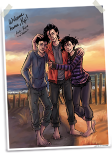
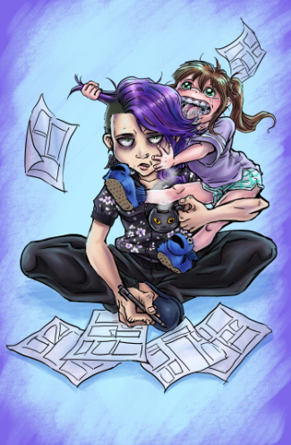

Genre: Sci-fi family drama with mystery, suspense
and some action
Rating: Mature
When Dr. Kuro Shimizu misses the bus one particularly rainy spring night, he thinks that the drenched walk home through the streets of Caulwyn marks a low note at the end of a long day. Little does he know that his night has only just begun. When a blood-soaked teenage boy collapses in the street before him, instincts take over as Kuro rushes to the boy’s aid… only to find that the young face is one he recognizes.
Making the bold decision to take the boy home to save his life, the teenager wakes up days later to find that this mysterious traumatic event has left him without a memory. Taking pity on their battered guest, the doctor and his daughter invite him to stay with them, and the trio quickly grow close as a family. But as time goes on, strange and unexplainable things begin to occur around the newest member of the Shimizu household.
Nocturne 21 is a passion project I’ve been working on for twenty years. It started out as a high schooler’s angsty comic scribbles, but with practice, blood, sweat, a WHOLE lot of tears, and even more “do-overs”, it eventually evolved into a more complex and interesting story. While the genre changes as we dive further into the plot, it will have a consistent focus on compelling characters, desperate struggles, dynamic relationships, and of course… family. For so many of us, our lives, who we become, and what we value comes from family, whether it be the one you’re born from or one you choose to forge for yourself.

My name is April, and I’m a comic artist and illustrator, originally from New England but currently living it up in the beautiful country of Japan. Creating characters and stories has always been my passion; it’s what made me teach myself how to draw as a child and refine my talent, eventually going on to get a degree in illustration. In middle school, I discovered comics and realized it was the perfect means to take these characters and their stories and really bring them to life.